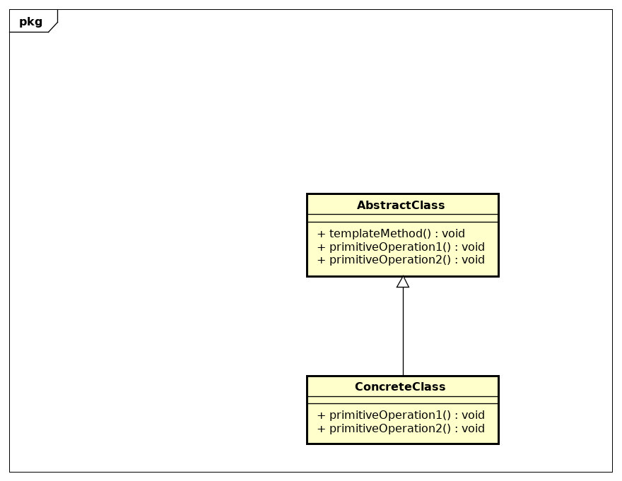

22 - Template
Descrição do padrão:
Template é um método que define a estrutura de um algoritmo em método, adiando alguns passos para subclasses. O Método Template permite que subclasses redefinam alguns passos para um algoritmo sem ter que mudar a sua estrutura.
UML do padrão:
Descrição do exemplo do livro:
A ideia do exemplo citado no livro é criar um simulador de babidas cafeinadas. Esse simulador possui dois tipos de bebidas cafeinadas, que possuem formas de preparo diferentes. O Template e aplicado quatro vezes: - Para instanciar a água fervendo; - Para instanciar a preparação; - Para instanciar a ação de botar em um recipiente; - Para instanciar a adição de condimentos.